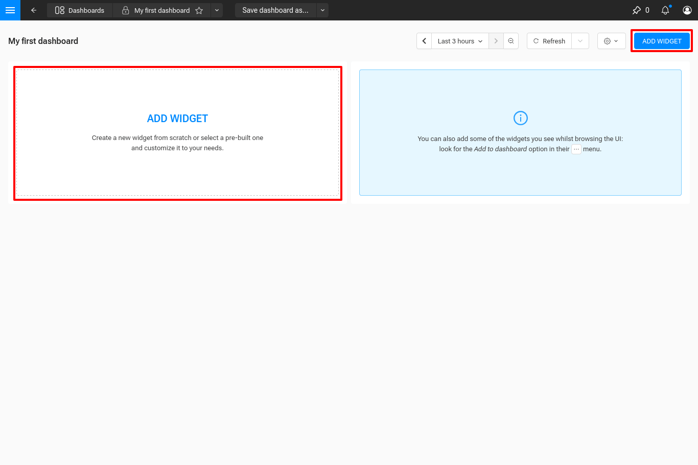
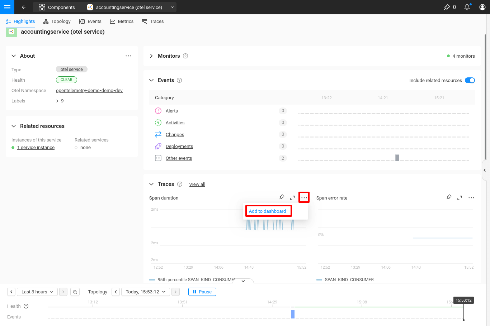
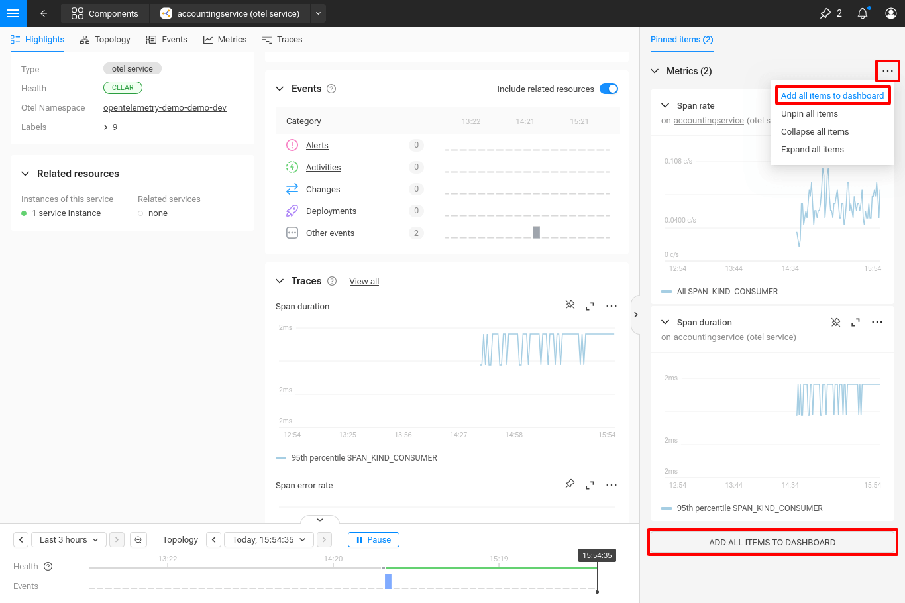
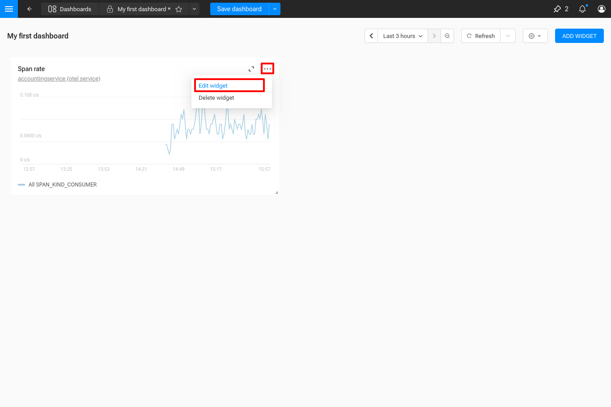
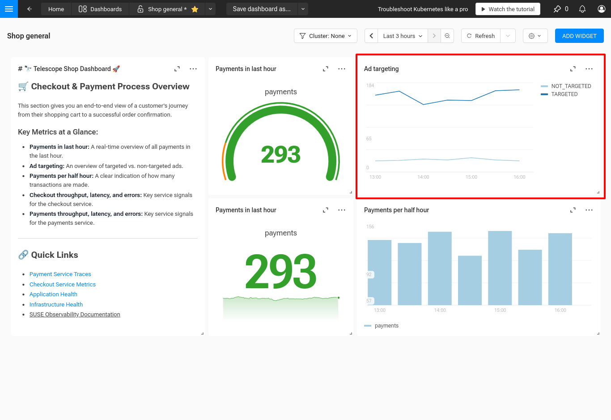
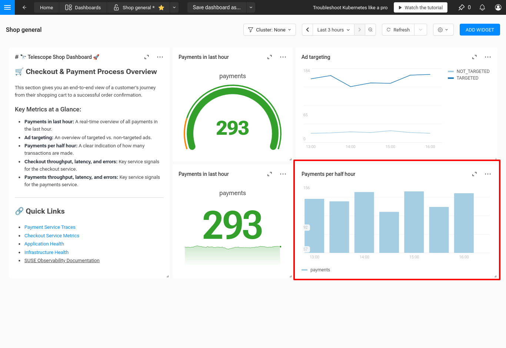
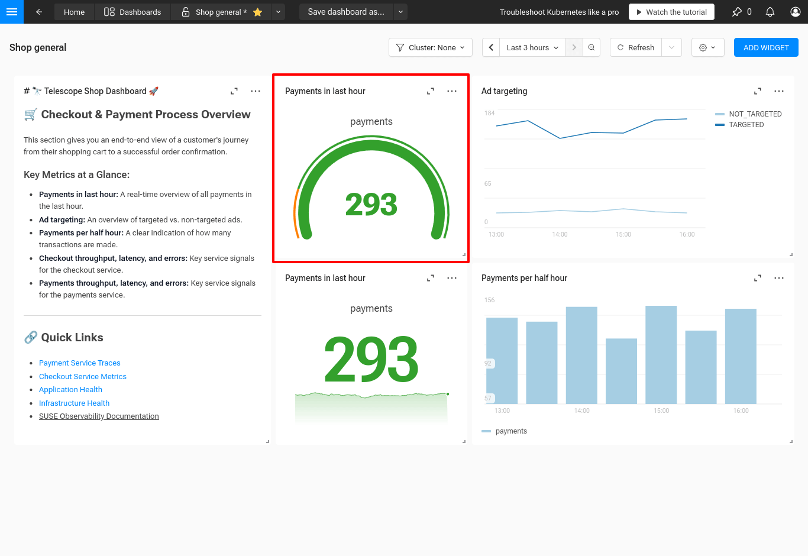
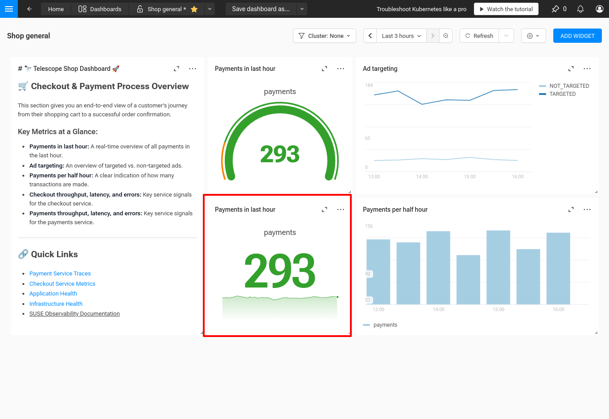

|
Dieses Dokument wurde mithilfe automatisierter maschineller Übersetzungstechnologie übersetzt. Wir bemühen uns um korrekte Übersetzungen, übernehmen jedoch keine Gewähr für die Vollständigkeit, Richtigkeit oder Zuverlässigkeit der übersetzten Inhalte. Im Falle von Abweichungen ist die englische Originalversion maßgebend und stellt den verbindlichen Text dar. |
Dashboard-Widgets
Widgets sind die Bausteine Ihres Dashboards. Sie visualisieren Daten, normalerweise aus einer oder mehreren Kubernetes-Ressourcen. Widgets können auch statische Textinformationen für die Betrachter des Dashboards anzeigen.
Hinzufügen eines neuen Widgets
Sie können ein neues Widget auf zwei Arten hinzufügen:
-
Klicken Sie auf die Schaltfläche Add Widget oben rechts in einem Dashboard.
-
Klicken Sie auf einem leeren Dashboard auf den Abschnitt Add Widget in der Mitte des Bildschirms. Eine Schublade öffnet sich, in der Sie das neue Widget konfigurieren können.

Hinzufügen eines vorhandenen Widgets
Wenn Sie eine einzelne Komponente in SUSE® Observability anzeigen, können Sie Diagramme direkt zu einem Dashboard hinzufügen, indem Sie das Menü "Weitere Aktionen" verwenden und "Zum Dashboard hinzufügen" auswählen.

Dies ist auch für alle angehefteten Elemente über dasselbe Menü "Weitere Aktionen" bei einem einzelnen Widget verfügbar.
Zusätzlich können Sie alle angehefteten Elemente zu einem Dashboard hinzufügen, indem Sie die "Weitere Aktionen" in der Schublade für angeheftete Elemente verwenden oder auf die Schaltfläche "Alle Elemente zum Dashboard hinzufügen" am unteren Ende der Schublade klicken.

Die resultierenden Widgets im Dashboard haben einen Link zu der Ressource, von der sie hinzugefügt wurden.
Konfigurieren eines Widgets
Jedes Widget hat eine Reihe von Konfigurationsoptionen. Einige sind für alle Widgets gemeinsam, andere basieren auf dem Widget-Typ.
Um die Konfiguration eines Widgets zu bearbeiten, verwenden Sie das Menü "Weitere Aktionen" und wählen Sie "Widget bearbeiten".

Allgemeine Widget-Felder
| Feldname | Beschreibung |
|---|---|
Name |
Ein kurzer, beschreibender Name, der im Header des Widgets angezeigt wird. |
Beschreibung |
Zusätzliche Details, die im Header des Widgets hinter einem Tooltip angezeigt werden. |
Typ |
Neben diesen Feldern gibt es einige allgemeine Registerkarten für alle Widgets:
| Registerkartenname | Beschreibung |
|---|---|
Links |
Verknüpfte Ressourcenlinks, die unter dem Namen des Widgets angezeigt werden. Der erste Link wird immer angezeigt. Weitere Links sind in einem Dropdown-Menü verfügbar. |
YAML |
Die rohe YAML-Konfiguration für das Widget, die angezeigt und bearbeitet werden kann. |
Abfragen-Registerkarte
Widget-Typen, die dazu bestimmt sind, Daten aus Ressourcen anzuzeigen, haben eine Abfragen-Registerkarte. Sie können ein oder mehrere PromQL-Abfragen hinzufügen, um die Daten für das Widget abzurufen.
Arten
TimeSeriesChart
Das TimeSeriesChart visualisiert Zeitreihendaten in einem Liniendiagramm. Jede Abfrage in der Widget-Konfiguration erzeugt eine Linie im Diagramm.

Sie können die folgenden Einstellungen konfigurieren:
-
Legende - Die Position und der Modus der Legende.
-
Visual - Verbinden Sie Nullwerte, um eine durchgehende Linie zu erstellen.
-
Y-Achse - Die Unit, die Beschriftung und die Min/Max-Werte für die Y-Achse.
-
Schwellenwerte - Fügen Sie horizontale Linien zum Diagramm hinzu, um wichtige Werteschwellen zu kennzeichnen.
BarChart
Das BarChart visualisiert Zeitreihendaten in einem Balkendiagramm. Es hat die gleichen Einstellungen für Legende, Y-Achse und Schwellenwerte wie das TimeSeriesChart.

StatChart
Das StatChart zeigt ein Sparkline-Diagramm und einen einzelnen Wert, der auf einen Blick leicht zu lesen ist. Schwellenwerte können konfiguriert werden, um die Farbe des Textes basierend auf dem Wert zu ändern.

Sie können die folgenden Einstellungen konfigurieren:
-
Sparkline - Sparkline-Diagramm anzeigen oder ausblenden.
-
Unit - Die Unit des Wertes.
-
Dezimalstellen - Die Anzahl der anzuzeigenden Dezimalstellen.
-
Berechnung - Die Methode, die verwendet wird, um den Wert aus den Zeitreihendaten zu berechnen.
GaugeChart
Das GaugeChart zeigt ein Gauge mit einem Wert in der Mitte an. Die Farbe des Gauges und des Textes ändert sich, wenn der Wert eine Schwelle überschreitet.

Sie können die folgenden Einstellungen konfigurieren:
-
Unit - Die Unit des Wertes.
-
Dezimalstellen - Die Anzahl der anzuzeigenden Dezimalstellen.
-
Max - Der maximale Wert des Gauges.
-
Berechnung - Die Methode, die verwendet wird, um den Wert aus den Zeitreihendaten zu berechnen.